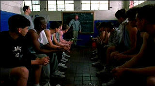

|
O (SE)/ B, A- |
|
Trimark/1999/94/ANA 1.85/PS 1.33 |
Shakespeare's plays remain timeless source material
for popular entertainment. Some movies are faithfully filmed
adaptations. Freer spirits take
their best shot updating Shakespeare for easier embrace by younger
audiences. O takes the later course quite successfully transplanting warrior Othello
from the canals of Venice to the hardwood basketball floor of a private
Southern high school. Iago is a jealous
teammate, Desdemona, the daughter of the Dean of the important Southern
private school, Casio a teammate catalyst and Rodrigo a student on the
outside. Director Tim Nelson Blake runs the script adaptation by
Brad Kayaa down the floor cool with efficiency.
The melodramatic ravings of
Othello and the insidiously cunning Iago marry perfectly to the broad
strokes of stage bound theater, but the plotting seems less true in an updated setting on screen.
Still, it is very faithful to Shakespeare's original, perhaps too faithful
for the contemporary updating of young people caught in a web of sick
deception.
 |
| The
obbligato pep talk. ©Trimark |
O is a great title in more ways than one. O for Othello, Odin James
for the great tragic American sports figure O.J. Simpson, and even O for the
"Big O," the great basketball star Oscar Robertson.
This is a top-notch production. It photographed by Russell
Lee Fine with shimmering intensity. The players literally glow. The basketball sequences are filmed with fine energy and are
happily kept to a minimum. Blake cuts O with quick strokes and helms
his team with good command.
Mekhi Phifer is sincere as O, but he doesn't carry
great weight. What stands out is his gross stupidity. He's a sitting duck
for Hugo's insinuations. Hugo is an excellent vehicle to platform Josh Hartnett's
talent. Hartnett does command the screen. He's an intelligent actor and he
comes across as the high scorer in this game. Julia Stile's is an appealing Desi
while Elden Henson has a difficult time making Roger Rodriguez a convincing
character. Martin Sheen is a manic coach on the floor. A little more foaming
at the mouth and he might just start barking. But it's okay if he plays it
at one loud level since it's not his story.
O looks great. Sharp images throughout compliments
a bright, powerful transfer. Contrast range packs as much punch as an
Odin James dunk. Color saturation is outstanding. Richly saturated reds
are perfectly controlled. Deep blacks never bury details. Shadow detail is
excellent. The soundtrack rocks with rap. Deep bass extension and good
surround effects.
The two-disc special edition features a scene specific
commentary from director Tim Nelson Blake on disc one. He articulates the
comparisons with Shakespeare's original very well. Blake makes
some key observations on the parallel between the action on screen and some
recent unfortunate middle class angst acted out on the real life American
stage. Disc two includes deleted scenes with commentary, an analysis of the
basketball sequences, and interviews with director and stars. A special
treat is the inclusion of a newly restored 79-minute silent version of
Othello starring screen legend Emil Jannings. Image quality is spotty
but its visually interesting and a excellent addition to the feature
material.
Reviewed on a Sharp 9000VX DLP Projector |
|
|
|
 Selections from the
Feature Archive include articles on Akira Kurosawa,
Blonde Bimbos,
Frank Darabont,
Steven Culp,
John Herzfeld or
Vietnam: The Hollywood Pariah, and many
more.... Selections from the
Feature Archive include articles on Akira Kurosawa,
Blonde Bimbos,
Frank Darabont,
Steven Culp,
John Herzfeld or
Vietnam: The Hollywood Pariah, and many
more....
Director Walks the Wire
Balanced by an armor of movie lore and filmmaking daring,
director John Herzfeld is comfortable walking the high wire. Check out this
interview by Stu Kobak.

L.A. Confidential (SE) /A,A

Unquestionably the best picture of 1997. Top-notch entertainment
with superb acting.
|

The major studio vaults are filled with incredible film treasures which
few have seen the light of DVD.
Open the Vaults

 Have you
visited Home
Theater Talk lately? One of the friendliest places on the Net
for Home Theater and DVD discussion, you can get help for installation
problems or simply share your opinions with other Vidiots. Have you
visited Home
Theater Talk lately? One of the friendliest places on the Net
for Home Theater and DVD discussion, you can get help for installation
problems or simply share your opinions with other Vidiots.
 It rains
a lot in Portland, so
DVDcorner.net provides an umbrella of
entertainment with lots of DVD reviews and DVD news. Check out the
monthly give-a-ways too!. It rains
a lot in Portland, so
DVDcorner.net provides an umbrella of
entertainment with lots of DVD reviews and DVD news. Check out the
monthly give-a-ways too!.

The National Film Preservation Foundation (NFPF) is the
nonprofit organization created by the U.S. Congress to save America's
film heritage.
 The
Cinematheque is a
cultural, arts organization that programs year-round specialty film
series at the newly renovated, landmark 1922
Egyptian Theatre
on Hollywood Boulevard! The
Cinematheque is a
cultural, arts organization that programs year-round specialty film
series at the newly renovated, landmark 1922
Egyptian Theatre
on Hollywood Boulevard!
|

'You are a strange species, not like any other. You are at your best when things
are at their worst.' Alien wisdom from Jeff Bridges in Starman.
Harold.
Starman
'Remember, in a pirate ship in pirate waters. , in a pirate world, ask no
questions; believe only what you see....No! Believe half of what you see.' Burt
Lancaster spouts the wisdom of The Crimson Pirate.
Mutiny on the Bounty
Crimson Pirate
Caine Mutiny
The African Queen: Humphrey Bogart to Katharine Hepburn, tired of
apologizing-'Well, I ain't sorry no more, you crazy Psalm-singing old maid.'
African Queen
Captain Blood
Wizard of Oz
'It doesn't matter where a man dies as long as he dies for freedom.' :Robert
Taylor in the patriotic war movie Bataan.
Bataan
Casablanca
Falling Down

There isn't very much Joan Crawford available on DVD as yet. Mildred Pierce,
1945, directed by Michael Curtiz, won an Oscar for Crawford as am ambitious
business women. This one is photographed with immense beauty by Ernest Haller.
Click on the DVD MIA symbol for profiles of DVDs
missing in action.
Add films to the
DVD MIA Master List by filling out a
simple form.
Click Here
Destination Tokyo
City of Joy
Mildred Pierce
Artisan Entertainment and uBid.com have announced a joint promotion to
coincide with the release of Jon Favreau's Made. The big prize is a trip
to New York City. Enter the Get Made in New York promotion by visiting uBid.com.
Vince Vaughn will not be giving tours.
DVD
Authority has implemented a new site design, according to
webmaster Matt Brighton. Easier to access reviews and navigation. Check
it out. |
|